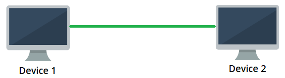
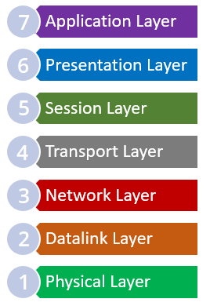

LET'S DEFEND
Network Fundamentals
What is a computer network?
A computer network is the structure in which at least two devices communicate with each other.
Purpose of Computer Networks :
Computer networks have become usable for many different purposes with the developing technology. These are the main uses :
- Provide image and sound transfer(Chat and online meetings)
- hardware sharing (Printer sharing)
- File, data and information sharing
- Software Sharing
- Central Management
- Support
ARPANET and Internet
The Advanced Research Project Agency Network (ARPANET) is a computer network considered the foundation of the internet.
In 1969, ARPANET was connected to three university networks in the USA, creating a computer network.
This network, which has spread over a wider geographical area, has come to the present day and created the Internet.
Types Of Networks
Computer networks are geographically divided into many groups according to their size.
- WAN - Wide Area Network 100km, 1000km (Country, Continent)
- MAN - Metropolitan Area Network 10km (City)
- LAN - Local Area Network 10m, 100m, 1km (Room, Building)
- PAN - Personal Area Network (Around Person)
PAN - Personal Area Network
Personal Area Network (PAN) refers to networks with a minimal and small number of devices that cover very short distances (for example, up to 10 meters). For example, a mobile device and a wireless headset connected via Bluetooth are examples of this type of network. There are only 2 devices in this small network: A mobile device and a wireless headset.
LAN - Local Area Network
Local Area Network (LAN) has a larger area than PAN. The number of devices in it can be much more. It is the most commonly used and found network type. Sometimes a network with 2 devices can also be called a LAN. The fact that it supports much more than 2 devices in terms of capacity and is geographically spread over a wider area indicates that it is a LAN-type network. For example, home networks and shared networks within the building can be given as examples of LAN.
MAN - Metropolitan Area Network
The Metropolitan Area Network (MAN) is a geographically city-sized computer network in which many LAN computer networks are interconnected. It connects networks with fiber optic cabling.
WAN - Wide Area Network
Wide Area Network (WAN) is the computer network with the largest geographical area among computer networks. This computer network is so large that it can even contain continents. It hosts all other computer networks within it. An example of this computer network is the "Internet". The following address can be used to see the intercontinental fiber-optic infrastructures around the world: Submarine Cable Map: submarinecablemap.com
Campus Area Network - CAN
Campus Area Network (CAN) is a computer network that is geographically smaller than MAN and larger than LAN. This computer network can contain several LANs. Usually, the computer networks of universities, institutions, or private companies are given as an example of this computer network.
Network Topologies
Network topology is a visual map to understand the physical or logical structure of a computer network.The locations of the devices and cables in the network are among the factors that determine the network topology. There are many benefits to having a network topology. For example, it is possible to see which other device(s) in the network will be affected if a device on the network fails to perform its task. If we are looking at a network topology of a large network, it is possible to see the subnets in the network and the devices it is connected to.
Network Topology is divided into 2 type:
Physical Topology
- It is a type of topology in which all devices and components in the network are drawn in terms of their exact locations. Looking at this topology, it is seen which cabling is made over which paths and devices. What is seen in the drawing has a physical counterpart. For example, if there is a network device in the path from device A to device B, this device is seen in the physical topology.
Logical Topology
- It does not show the exact location of the devices in the topology like physical topology. It often contains fewer elements than physical topology. Because data flow is important in logical topology. For example, data going from device A to device B may not be included in the topology if it passes over device C between device A and device B, and device C has no effect on the data that would need to be displayed on it.In this topology, it is the path of the data flow that is desired to be emphasized rather than the physical placement of the devices.
Some topologies are described in the following topics:
Ring Topology
It works in a closed loop logic. The sent data travels around the ring in one direction until it reaches the destination. Each node passes the incoming data over it and ensures that it reaches the target. There is no hierarchical relationship between nodes.

Star Topology
Each node in the Star topology is connected to a central node. All data flow is done through the central node. Star topology is one of the most common computer network topologies.

Mesh Topology
It is a network topology where there is no central node and each node can be directly connected to the other.Mesh topology is not a suitable topology for large networks. It is divided into 2 types:
Full-Mesh
In the Full-Mesh topology, each node in the network is connected to all other nodes by cabling separately. In this topology, it is unlikely that the connection between two nodes will be broken. Because there are alternative ways of connecting.

Partial-Mesh
In the Partial-Mesh topology, although each node is not directly connected to all other nodes, they are largely interconnected. Just like in Full-Mesh topology, there are alternative ways to reach the target node in case of disconnection.

Bus Topology
Bus topology is a topology where nodes are located on a common path and data transmission is made with a bidirectional connection on this path. In the bus topology, each node receives every transmitted data even if it does not belong to it. Since there is no hierarchical order among the nodes, there is no transmission priority.

Point-to-point Topology
Point-to-point topology is the simplest topology and consists of two nodes connected together.For example, a passing call between two phones creates a point-to-point topology, or a direct connection between two computers creates a point-to-point topology.

Tree Topology
Tree topology is a hybrid network topology formed by connecting star and bus topology. Tree topology has a hierarchical order and each node can have any number of subnodes.

OSI Reference Model
Whar is the OSI Reference Model?
The Open Systems Interconnection (OSI) reference model was developed by ISO (International Organization of Standardization) in 1978. The OSI model is a model created to enable communication between different operating systems. With this model, it has become easier to understand network structures. It is a reference quality and has a layered architecture. Each layer in the OSI model has separate tasks. There is a hierarchical order between these layers and each layer serves the next layer. The number of layers in the OSI model is 7.

Data transmission is carried out through these layers and the data is transmitted to the user. Each layer in the OSI model is explained under the following topics.
Physical Layer
The physical layer is the first layer in the OSI model. In this layer, data is transmitted in bits along the communication channels. Since the physical layer is only responsible for the transmission of data, it does not have any information about the type of data it transmits and what it is. The data for this layer consists of ordered bit sequences.
Datalink Layer
The datalink layer is the 2nd layer in the OSI model.This layer processes the bits from the physical layer and prepares them to be sent to the next layer. The basic operation in this layer is physical addressing.The first layer responsible for error checking in the OSI reference model is the "Datalink Layer".
Network Layer
The network layer is the 3rd layer in the OSI model.The network layer is responsible for delivering the data to the destination logical address (IP Address).The basic operation in this layer is logical addressing.
Transport Layer
The transport layer is the 4th layer in the OSI model.The transport layer is responsible for transmission security.This layer provides many additional controls for error-free transmission of data and thanks to these controls, data transmission is successfully performed.
Session Layer
The session layer is the 5th layer in the OSI model.The session layer is responsible for providing the necessary services for the presentation layer to work.The main operation in this layer is session management.
Presentation Layer
The presentation layer is the 6th layer in the OSI model.The presentation layer is the layer where data is displayed. Two communicating nodes must use a common language for data representation.Thanks to this layer, the agreement is made in the language used.
Application Layer
The Application layer is the 7th and final layer in the OSI model.The application layer is the layer closest to the user and provides access to structures found in the user-level OSI model.
Network Device
In a computer network, there are network devices, each responsible for a separate task. Without these components in a computer network, the network cannot fulfill its task. Therefore, knowing the tasks and capabilities of network devices allows for solving problems in the network and understanding security breaches. In this way, a solution is reached by taking quick action. In this part of the training, information about network devices in an IT network will be discussed.
SWITCH
The switch is one of the network devices operating at layer 2(Datalink Layer) according to the OSI reference model. However, some switches with more manageable features operate at layer 3 (Network Layer) according to the OSI reference model.The switch is the interconnection device and is used to connect the nodes that want to connect to the network. Sizes may vary depending on the number of ports on it.

As seen above, the switch device transmits the data coming from the source port only to the destination port, so it provides a data transmission that will not adversely affect the network performance. In terms of security, it prevents data belonging to two parties from reaching third parties, thus increasing data security in a way.

ROUTER
The router is one of the network equipment working at the 3rd layer according to the OSI reference model. The router is a packet routing device with highly advanced features that contains an operating system (IOS - Internetworking Operating System).It is network equipment used by placing it between two computer networks. For example, it is often used in LAN-LAN connections and WAN-LAN connections. The most basic task of the router is packet routing and thanks to this device, the networks are separated from each other (segmentation). In other words, it is one of the devices that separate computer networks from each other. It is a configurable device.

HUB
The hub is one of the network hardware operating at layer 1 according to the OSI reference model.The hub device, which has a very simple structure, is one of the devices used to connect computers that want to connect to the network.


REPEATER
The repeater is one of the network equipment working at layer 1 according to the OSI reference model. There are only 2 ports on the repeater device.These ports transform the incoming signal into an outgoing signal and transmit it to the destination. It strengthens the weak signals on it and enables it to transmit data to longer distances. It is a device similar to a hub but does not have as many ports as a hub.

BRIDGE
The bridge is one of the network hardware running at layer 2 according to the OSI reference model. The bridge performs packet routing by connecting two computer networks.Although it has a similar task to a router, it is a very simple device with fewer ports than a router. It is also separated from the router by working at the 2nd layer. The bridge can be used in LAN-to-LAN connections.

Modem
Modems are generally small-sized network equipment in which the features of some devices such as switches are gathered together. It contains a small operating system.It is generally used in home networks to access the internet environment. It may have one or more ports on it. In addition, it is possible to provide an internet connection by using wireless devices together with the modem in wireless supported modems.

FIREWALL
A firewall is one of the network equipment running at layer 4 according to the OSI reference model. A firewall is vital to network hardware located between the internet, which is considered an insecure network, and the existing network.The task of the firewall, which is one of the basic network equipment necessary to ensure the security of the network, is to block or allow traffic according to certain rules. Although there are many types, the most commonly used and known type of firewall is hardware network firewall devices. Having a firewall device alone is not enough to protect the network against external threats. Because attackers can even infiltrate networks with firewalls. The firewall must be configured correctly. Incomplete and incorrect firewall configurations can negatively affect network performance, as well as cause security vulnerabilities.

GATEWAY
Gateway is one of the network equipment that can work at every layer according to the OSI model. The gateway is a network component that provides inter-network communication located between two networks. In other words, it connects networks. Although it is similar to router devices in terms of its function, it differs from routers with its ability to work in every layer. In addition, there are not only hardware but also software gateway types. Gateways are a gateway for other nodes in the network. Through this device, they can go out of the network and communicate with a node in another network.

TCP/IP Model
What Is The TCP/IP Model
The TCP/IP model was designed and developed by the Department of Defense (DoD) in the 1960s. When the TCP/IP model was introduced, there was no model that set the standards in computer network communication yet. With this model, it was determined how the network communication should be on the basis of the internet. The TCP/IP model has a layered architecture and consists of 4 layers:
- Application Layer
- Transport Layer
- Internet Layer
- Network Access Layer

Network Access Layer
The network access layer is the 1st layer in the TCP/IP model. It corresponds to layers 1 and 2 in the OSI reference model. This layer includes physical accesses and hardware controls.
Internet Layer
The Internet layer is the 2nd layer in the TCP/IP model.It has similar functions as layer 3 in the OSI reference model. In this layer, network communication functions are performed by logical addressing.
Transport Layer
The transport layer is the 3rd layer in TCP/IP model. It has similar functions as layer 4 in the OSI reference model. In this layer, data transmission is made and the reliability of the communication is ensured. Whether the data is transmitted correctly without corruption is managed in this layer.
Application Layer
The Application layer is the 4th and final layer in the TCP/IP model. It is a layer that covers all the operations performed in layers 5, 6, and 7 in the OSI reference model. Application-level controls and operations are executed in this layer.
OSI Model vs. TCP/IP Model
Although the OSI reference model and the TCP/IP model are very similar models, they differ from each other on some points. When the TCP/IP model first emerged, it emerged out of necessity, not aiming to be a standard. The OSI reference model, on the other hand, aimed to design the ideal network communication, which should be in theory, including its practical use. The TCP/IP model was developed based on some protocols. The OSI model, on the other hand, was not developed on any protocol.
The image below shows which layers in the OSI reference model are equivalent to which layers in the TCP/IP model in terms of tasks and protocols.